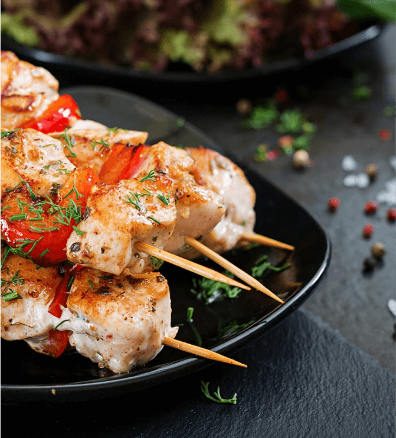
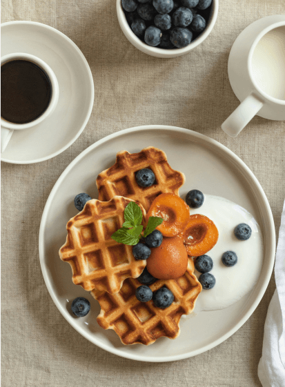
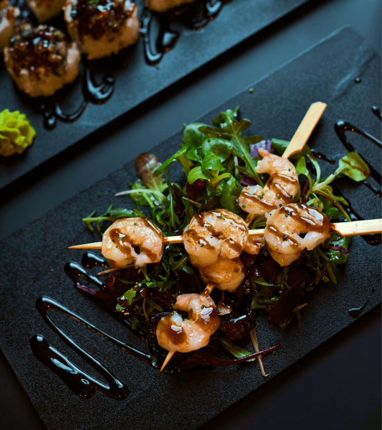
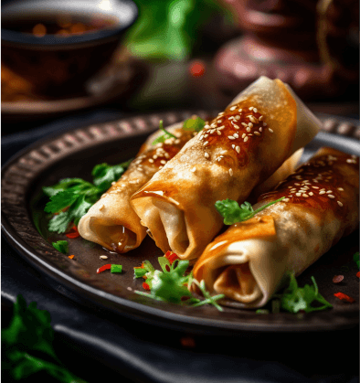
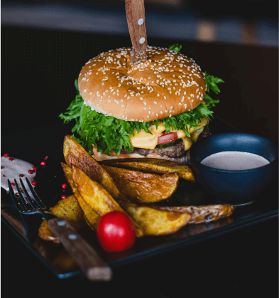
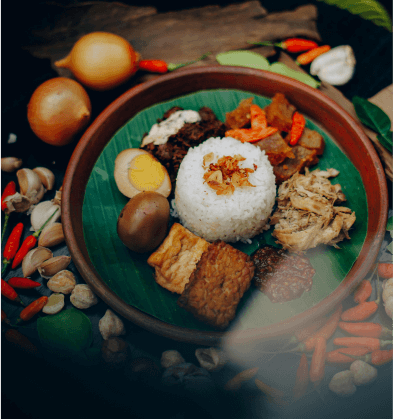
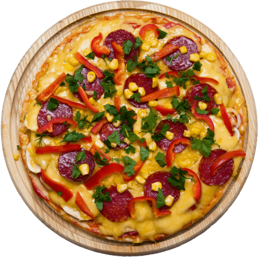
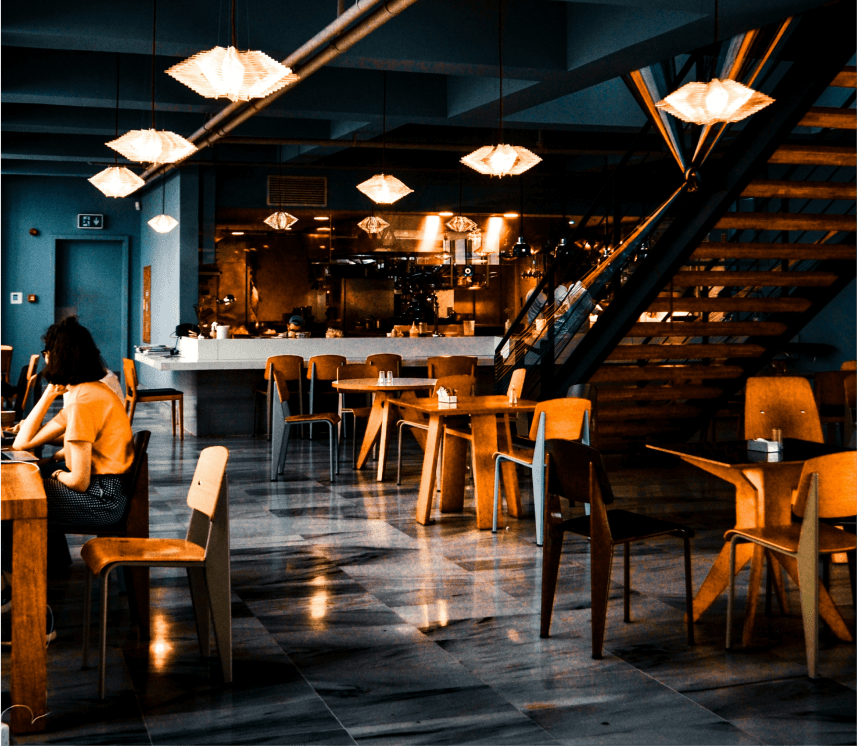

LE GOÛT AUTHENTIQUE
Des plats généreux, des recettes qui donnent envie et le plaisir de bien manger, tout simplement.
Un repas généreux, des amis autour de la table et une pause bien méritée. Bienvenue chez ZEDUC-SP@CE, le rendez-vous gourmand de la communauté ULC ICAM.
VOIR LA CARTEDes plats généreux, des recettes qui donnent envie et le plaisir de bien manger, tout simplement.
Une cuisine préparée avec attention, pour faire de chaque pause un moment à savourer.
Des burgers aux grillades, des pizzas aux douceurs : trouvez de quoi combler toutes vos envies.



Des brochettes dorées au grill, des légumes et une belle touche de fraîcheur.
Un pain moelleux, une garniture généreuse et notre sauce maison. Le bon compagnon de votre pause.

Un bol parfumé et coloré, pour une pause aussi gourmande que réconfortante.

Des rouleaux dorés et croustillants, à déguster autour d’une bonne table.

Choisissez votre adresse à Kinshasa et suivez votre commande depuis votre espace.
Grillades, burgers, pizzas et desserts : il y en a pour chaque envie.
Cumulez des points à chaque commande terminée et retrouvez vos récompenses.
Invitez vos amis de l’ULC ICAM et partagez vos meilleures pauses gourmandes.
À votre façon
Sur place ou à votre adresse à Kinshasa, retrouvez la carte dans votre espace étudiant. Choisissez votre repas et suivez sa préparation en quelques gestes.
VOIR LA CARTE
Bienvenue à table
Entre amis ou après les cours, imaginez votre prochaine table. Ce formulaire est une démonstration : aucune réservation n’est envoyée.

Notre communauté
KINSHASA · ULC ICAM
Entre deux cours, après une longue journée ou juste pour le plaisir : il y a toujours une bonne raison de se retrouver autour d’un repas.
La vie du resto